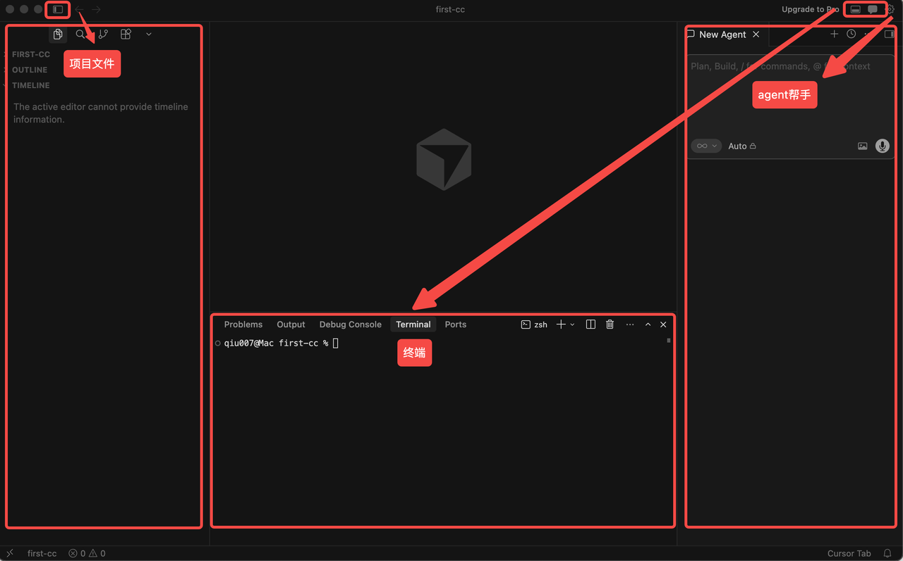
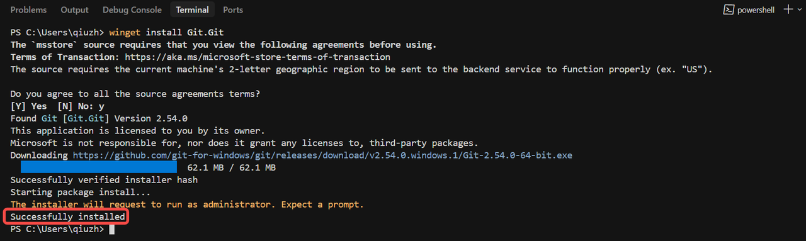
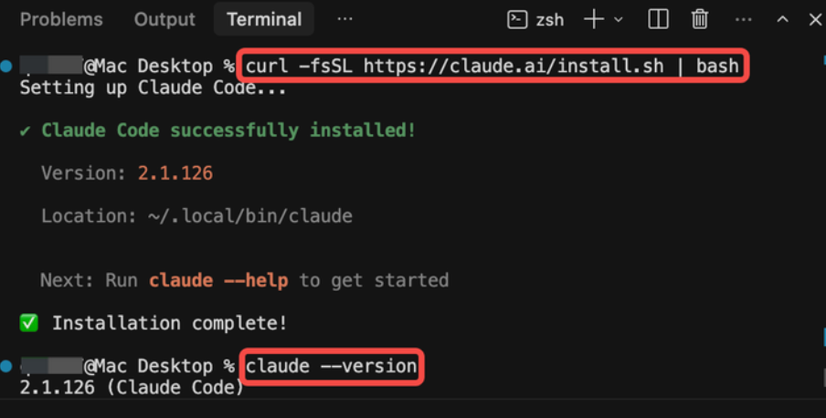

原始飞书文档：Claude Code完全教程【视频文档】。本文为导入整理版，原文标注 5 月 14 日修改。
一、初步上手
1. 部署前准备
首先需要下载和安装一个 Agent IDE（智能体集成开发环境）。
推荐使用以下免费 IDE，无需购买会员，使用免费额度即可完成后续 Claude Code 部署：
| Agent IDE | 下载地址 |
|---|---|
| Cursor | 官网下载 |
| Google Anti-gravity | 官网下载 |
| Trae | 官网下载（cn）/ 官网下载（en） |
以 Cursor 为例，下载进入后，可以构建如下开发环境布局：

2. 安装 Claude Code
方式 1：终端命令行安装（需魔法上网）
根据自身系统，选择对应代码，在 IDE 终端输入并回车。
Windows
步骤 1：在 IDE 终端用 WinGet 先安装 Git，遇到选项直接输入 y。
winget install Git.Git
步骤 2：在 IDE 终端输入代码，下载 Claude Code。
Windows PowerShell：
irm https://claude.ai/install.ps1 | iexWindows CMD：
curl -fsSL https://claude.ai/install.cmd -o install.cmd && install.cmd && del install.cmd下载好以后进行版本验证，版本号正常显示，代表安装完成：
claude --versionmacOS
直接在 IDE 终端输入以下代码：
curl -fsSL https://claude.ai/install.sh | bash下载好以后进行版本验证：
claude --version
方式 2：Agent 原生安装（需魔法上网）
步骤 1：直接向 IDE Agent 输入提示词：
帮我安装 node 并且用 npm 安装好最新的 claude code步骤 2：验证 Claude Code 版本号，确认安装成功：
claude --version方式 3：无魔法安装 Claude Code
Windows
步骤 1：用 WinGet 先安装 Git，遇到选项直接输入 y。
winget install Git.Git步骤 2：在 IDE Agent 输入以下提示词，让 Agent 一条龙搞定 Claude Code 安装：
执行这条代码安装 Claude code：winget install Anthropic.ClaudeCode
安装完后，把 Claude Code 的可执行文件路径配置到系统环境变量的 Path 里。步骤 3：装完后，重启 IDE，验证 Claude Code 版本号，确认安装成功。
claude --versionmacOS
步骤 1：在 IDE 终端先装 Homebrew。
/bin/bash -c "$(curl -fsSL https://raw.githubusercontent.com/Homebrew/install/HEAD/install.sh)"步骤 2：向 IDE Agent 输入提示词：
帮我把 homebrew 加到 PATH 路径变量里面去步骤 3：在 IDE 终端输入代码，安装 Claude Code。
brew install --cask claude-code@latest步骤 4：验证 Claude Code 版本号，确认安装成功。
claude --version3. 配置大模型
- 下载 CC Switch 做多模型切换和管理。
CC Switch 的 GitHub 仓库下载页：
https://github.com/farion1231/cc-switch/releases/tag/v3.14.1原文记录的版本号：v3.14.1。
-
在下载页，根据系统选择对应下载包。
-
安装完成后，务必在打开 Claude Code 之前，优先设置 CC Switch。在 CC Switch 的 Claude Code 页面添加 API Key 供应商。
-
以 Minimax 为例，选择对应厂商（中国版），然后填写 API Key 和 Base URL。如果不知道 Base URL，可以在 API Key 的官方文档里找到。
-
选择「启用」设置好的 API，Claude Code 的大模型配置完成。
4. 基础实操
步骤 1：在 IDE 终端打开 Claude Code。
claude步骤 2：根据个人喜好设置皮肤与主题，然后一路 yes 后，进入 Claude Code 主界面。
步骤 3：默认情况下，Claude Code 接到任务后会进入计划模式（Plan Mode）。
步骤 4：使用 shift+tab，可以让 Claude Code 在计划模式、默认模式和 Accept Edits 模式之间来回切换。
| 模式 | 功能 |
|---|---|
| 默认模式 | 启动 Claude Code 后的初始交互状态，类似一个增强版对话终端，用于意图确认、信息查询和简单任务。 |
| 计划模式 | Claude 进行复杂代码更改时会进入这一阶段，分析需求并制定执行步骤，不直接动代码。 |
| Accept Edits 模式 | Claude Code 的落地阶段，会执行代码变更的最终确认与写入。 |
额外提醒：
- 如果希望 Claude Code 能一路绿灯执行所有操作，需要输入
/exit退出重启后，在启动 Claude Code 时输入以下命令：
claude --dangerously-skip-permissions- Claude Code 在 Accept Edits 模式下执行终端命令时，三个选项的含义依次分别是：
| 选项 | 含义 |
|---|---|
| Yes | 仅同意这一次的命令执行。 |
| Yes, and do not ask again | 同意这类命令后续自动执行。 |
| No | 拒绝本次命令执行。 |
5. 如何提供文件给 CC
方式 1：本地文件
直接把本地文件路径发给 Claude Code，让它读取或处理。
方式 2：图片
可以把图片拖入 Claude Code，或将截图路径提供给 Claude Code。
方式 3：多行文本输入
需要输入多行内容时，可以使用 \ 续行、编辑器粘贴，或直接提供文件路径让 Claude Code 读取。
6. 指令大全
原文附有文件：
claude code最新指令大全.pdf
133.36KB二、掌控与管理
1. Git 下载与设置
在 Claude Code 中输入以下提示词，根据 Claude Code 引导进行操作：
帮我下载 Git，并与我的 GitHub 账号绑定2. 上下文管理
步骤 1：确认上下文进度。
输入 /context 命令，它会详细展示上下文占比信息：
/context步骤 2：主动压缩上下文。
Claude Code 会在上下文即将满的时候自动压缩。原文建议看到高于 60% 后，大概率需要执行：
/compact步骤 3：彻底清空上下文。
/clear步骤 4：context 占用条常驻。
对 Claude Code 输入提示词，并根据引导完成后重启终端：
帮我配一个 statusLine,显示当前目录+模型+上下文剩余百分比步骤 5：对话恢复。
输入以下指令后，选择恢复到你想要的会话：
/resume三、个性化
1. Claude.md 配置
项目级 Claude.md 创建方式：
/init全局级 Claude.md 有两种创建方式。
方式 1：提示词交互。
记得永远说中文，写进全局claude.md方式 2：使用指令。
输入 /memory 后，选择「User Memory」进入。
2. Auto Memory
打开 Auto Memory：输入 /memory，选择「Auto-memory」并回车开启。
打开以后，与 Claude Code 的工作交互过程中，那些没有显式主动写进 claude.md 的习惯、错误、经验，都会以自动记忆形式被记录，但仅限于当前项目，不会跨项目产生影响。
四、能力扩展
1. Skill 技能扩展
Claude Code 优质 Skill 推荐：
| Skill 名称 | 功能 | 下载链接 |
|---|---|---|
| Find-Skill | 根据用户需求，查找和安装来自 agent skill 开放生态的技能。 | GitHub |
| Frontend-Design | 创建具有独特风格、生产级品质且设计精良的前端界面。 | GitHub |
| Skill-Creator | 创建新 skill、修改和改进现有 skill，并衡量 skill 表现。 | GitHub |
| 卡帕西 skill | 一个依据卡帕西经验总结，用于提升 Claude Code 编码表现的 skill。 | GitHub |
补充说明：
- 可以将 skill 链接给 Claude Code，让它帮你直接下载。
- skill 合集网站：lobehub。
- 如果想创建自己的 skill，原文还提到有一份网页版教学文档：Agent Skills 指南（Claude Code 版）。
- 下载了 skill 后，可根据需求将 skill 文件放入项目级 skill 或全局级 skill 的存放文件夹。
2. MCP 扩展
关于 MCP 的部分，可结合以下教程学习与实践：
视频教程：用神器Claude Code！打造贴身AI秘书团【小白教程】
文档教程：Claude Code教程3. CLI 命令行工具
推荐几个优质 CLI，直接将下载链接给 Claude Code，让 Claude Code 全权负责下载和引导操作：
| CLI 名称 | 功能 | 下载 |
|---|---|---|
| 飞书 CLI | 飞书官方 CLI 工具，覆盖消息、文档、多维表格、电子表格、幻灯片、日历、邮箱、任务、会议等核心业务域，提供 200+ 命令及 24 个 AI Agent Skills。 | GitHub |
| OpenCLI | 万能命令行工具箱，通用命令行中心与 AI 原生运行平台，能将任何网站、桌面应用或本地程序变成统一命令行操作界面。 | GitHub |
| CLI | GitHub 官方命令行工具，将拉取请求、问题和其他 GitHub 概念带到终端中。 | GitHub |
| gemini-CLI | Gemini CLI 可将 Gemini 的功能直接引入终端，提供轻量级 Gemini 访问方式。 | GitHub |
原文还推荐 GitHub 上的 CLI 主题推荐网页：Command-line interface。
4. 子 Agent（SubAgent）
创建子 Agent 的两种方式：
- 自动触发：任务复杂且存在并行可能时，Claude Code 会自动派生子 Agent 并行推进。
- 手动创建：通过指令
/agents，在 Library 界面进行创建。
手动创建步骤：
- 选择创建项目级或全局级子 Agent。
- 选择「AI 辅助创建」，让 AI 根据意图辅助创建。
- 描述想要的子 Agent 功能。
- 决定子 Agent 工具权限（✓ 为选中）。
- 选择 Claude 的模型。一般选 Sonnet 就可以；如果使用 CC Switch 配置了模型，选哪个都一样。
- 为子 Agent 挑选区别于主 Agent 的颜色。
- 调用与管理子 Agent：输入
/agents，在 Library 下选择已创建的项目级子 Agent，并根据需求对子 Agent 进行相应操作。
5. Hook 钩子
推荐以下 Hook 设置，直接告诉 Claude Code 帮忙设置。
推荐 1：任务完成提示音。
设置一个hook，每次完成任务之后，都自动执行一个声音脚本，发出一个提示音"叮"进行提醒推荐 2：代码提交前检查。
设置一个hook，每次提交代码之前，都会自动触发代码格式的检查6. 插件（Plugin）
插件是打包了 Skill、SubAgent、Hook、MCP 的整合性概念。
步骤 1：通过指令 /plugin 进入插件管理界面。
步骤 2：在插件管理界面，可以收录下载钟意的插件，或管理已下载插件。
原文推荐了一些 Claude Code 官方精选插件：
| 插件名称 | 插件功能 | 链接 |
|---|---|---|
| commit-commands | 使用简单的命令简化 Git 工作流程，包括提交、推送和创建拉取请求。 | GitHub |
| content-creator | 跨平台内容创作，从长篇博客文章到视频脚本和社交媒体内容。 | GitHub |
| security-guidance | 安全提醒钩子，在编辑文件时提示潜在安全问题，包含命令注入、XSS 及不安全代码模式。 | GitHub |
如果仍有需求，可以去官方/三方插件网站继续查看自己需要的插件：
- Plugins
- Claude Code Plugins